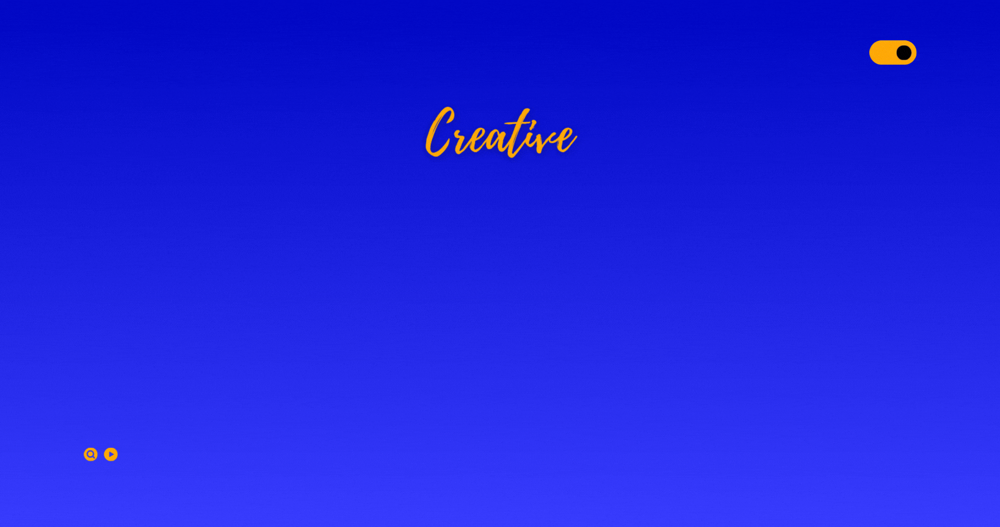

Mengenal lebih dekat dengan asal daerah dan visi kependidikan
Bone adalah rumah bagi filosofi Pangadereng. Karakter masyarakatnya terbentuk dari prinsip Taro Ada Taro Gau, sebuah landasan moral yang menekankan keselarasan antara perkataan dan perbuatan. Bagi masyarakat Bone, integritas adalah segalanya; apa yang diucapkan haruslah dibuktikan dengan tindakan nyata. Prinsip ini melahirkan pribadi-pribadi yang jujur, bertanggung jawab, dan sangat memegang teguh janji.
Keunikan daerah ini semakin lengkap dengan kerajinan tangan Songkok Recca, anyaman serat pelepah aren yang menjadi simbol identitas dan martabat. Letak geografis Bone yang membentang di sepanjang pesisir Teluk Bone menjadikannya sebagai salah satu kekuatan maritim dan lumbung perikanan terbesar di Sulawesi Selatan.
Inspirasi menjadi guru bagi saya muncul karena saya sangat suka mengajar dan berbagi kepada sesama. Berlatar belakang berbagai organisasi telah membentuk saya menjadi pribadi yang aktif di masyarakat dan senang berbagi, terutama dalam hal pengetahuan.
Bagi saya, menjadi guru bukan sekadar profesi, melainkan jembatan untuk mengabdikan pengalaman organisasi saya ke dalam ruang kelas demi mencetak generasi yang tidak hanya cerdas secara akademis, tetapi juga peka secara sosial. Selalu ada harapan bagi mereka yang ingin berusaha, selalu ada peluang bagi mereka yang berusaha. Dan selalu ada jalan bagi mereka yang tak lelah berusaha.
"Jika kamu berhenti di kegagalanmu yang kedua, maka kamu tidak akan tahu bahwa kamu akan berhasil di percobaanmu yang ketiga."
Dokumentasi siklus pembelajaran selama PPL
Lampiran 7 & 8 - Instrumen Penilaian
SMKN 6 Makassar - 8 Siklus
SMKN 6 Makassar - Mata Pelajaran: Pengolahan Makanan dan Minuman
Misi, Kompetensi dan Karakter Guru Profesional